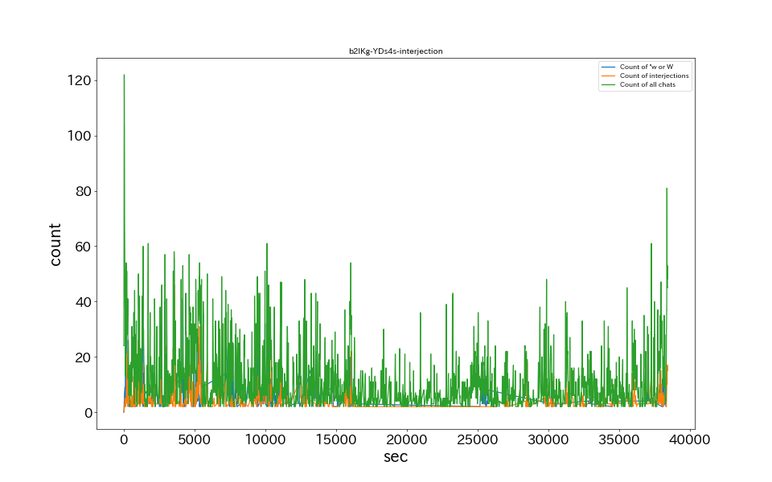
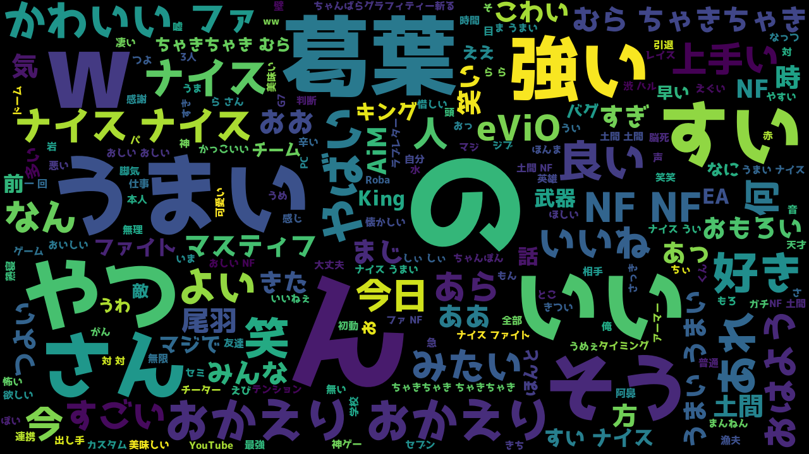

15秒あたりのコメント数

草、wのチャット数ランキング
感動詞のチャット数ランキング
チャット内単語出現ランキングTop20
| No. |
原型 |
チャット数 |
| 1 |
草
|
3076 |
| 2 |
|
999 |
| 3 |
ナイスゥ！
|
681 |
| 4 |
gg
|
547 |
| 5 |
ナイスゥ
|
494 |
| 6 |
nf
|
343 |
| 7 |
ナイファイ
|
182 |
| 8 |
おかえり
|
175 |
| 9 |
うま
|
145 |
| 10 |
ナイス
|
103 |
| 11 |
ナイス！
|
99 |
| 12 |
あ
|
96 |
| 13 |
あら
|
94 |
| 14 |
どま
|
91 |
| 15 |
ないふぁい
|
88 |
| 16 |
！？
|
83 |
| 17 |
ないすぅ
|
74 |
| 18 |
ないすぅ！
|
71 |
| 19 |
ナイスゥ！！
|
68 |
| 20 |
うっま
|
67 |
| 21 |
なんて？
|
65 |
| 22 |
あっ
|
63 |
| 23 |
え？
|
63 |
| 24 |
うまい
|
56 |
| 25 |
ないす
|
49 |
| 26 |
かわいい
|
49 |
| 27 |
いてら
|
47 |
| 28 |
？
|
46 |
| 29 |
ん？
|
45 |
| 30 |
やば
|
44 |
| 31 |
こわ
|
43 |
| 32 |
対よろ
|
39 |
| 33 |
おしい
|
39 |
| 34 |
ナイファイ！
|
38 |
| 35 |
おお
|
35 |
| 36 |
いいね
|
33 |
| 37 |
w
|
32 |
| 38 |
わかる
|
32 |
| 39 |
あー
|
31 |
| 40 |
どまです
|
31 |
| 41 |
お
|
27 |
| 42 |
うまうま
|
27 |
| 43 |
GG
|
26 |
| 44 |
なっつ
|
25 |
| 45 |
ちゃきちゃき〜
|
25 |
| 46 |
おはよう
|
25 |
| 47 |
ある
|
24 |
| 48 |
むらちゃきちゃき〜
|
22 |
| 49 |
いいねぇ
|
21 |
| 50 |
おはようございます
|
21 |
